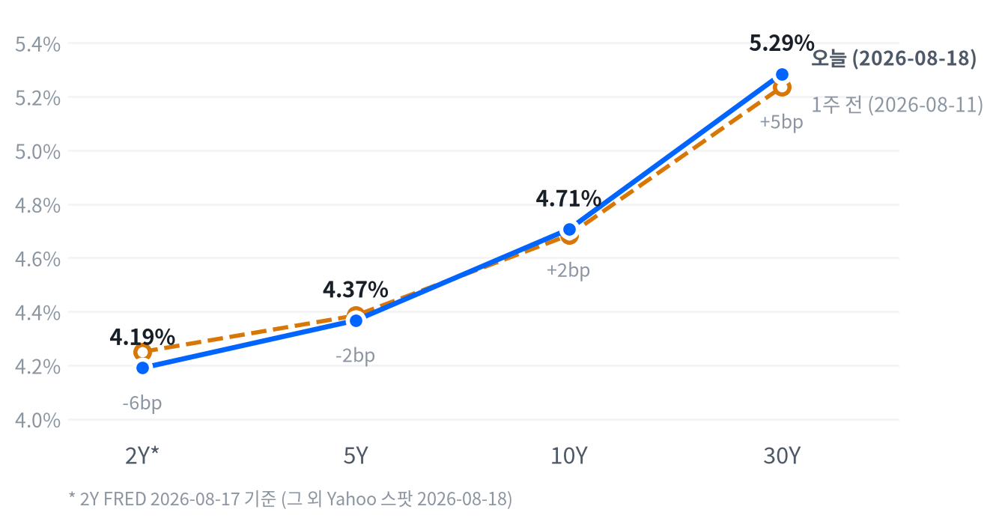

나스닥 -1.33%, S&P500 -0.69%, 러셀2000 -1.30%로 대형 성장주·소형주가 특히 부진한 하루였다. 30년물 국채금리가 5.285%까지 오르며 근 20년래 최고 수준을 기록한 가운데, 대형 테크의 오프밸런스시트 AI 투자 부담을 지적한 WSJ 보도가 메모리·AI인프라주 급락(Micron -7.0%, Coherent -12.8%)의 직접 도화선이 됐다.
동인 — 오늘 하락은 단일 재료가 아니라 세 개의 서로 다른 시계가 겹친 결과다. 30년물이 근 20년래 최고 수준까지 오른 것은 수개월짜리 구조적 흐름(재정 공급·기간프리미엄)이고, WSJ의 빅테크 오프밸런스시트 AI 지출 보도는 며칠짜리 밸류에이션 재평가 트리거이며, 이란발 지정학 긴장은 시간 단위로 바뀌는 이벤트 리스크다. 세 시계가 우연히 같은 날 부딪히면서 낙폭이 증폭됐다.
크로스에셋 정합성 — 이 하락은 리스크오프로 보기 어렵다. 달러가 사실상 보합, 금이 오히려 -0.64%로 밀렸고 신용 스프레드도 경보 수준과는 거리가 멀다. 대신 성장주(-1.28%)와 가치주(+0.03%)의 극단적 괴리, 그리고 메모리·AI인프라 개별주에 집중된 급락은 이번 매도가 자산군 전반의 공포보다 고밸류에이션 성장 스토리에 대한 국지적 재평가에 가깝다는 것을 보여준다.
다음 촉매 — 단기적으로는 30Y가 5.40%를 상회하는지, WSJ 보도 이후 개별 하이퍼스케일러·메모리 업체의 추가 코멘트가 나오는지가 관건이다. 9월 16일 FOMC를 앞두고는 8월분 CPI(9월 중순 발표)가 이 디스인플레이션 서사를 뒷받침하는지 여부가 다음 6주 포지셔닝의 분수령이 될 전망이다.
| 지수 | 종가 | 등락 | 등락률 |
|---|---|---|---|
| 나스닥 | 26,289.71 | -355.20 | -1.33% |
| S&P 500 | 7,691.76 | -53.30 | -0.69% |
| 다우존스 | 53,343.40 | -116.38 | -0.22% |
| 러셀 2000 | 3,017.89 | -39.65 | -1.30% |
| S&P 500 성장주 | 139.68 | -1.81 | -1.28% |
| S&P 500 가치주 | 236.70 | +0.06 | +0.03% |
| 섹터 | 등락률 |
|---|---|
| 에너지 | +1.76% |
| 헬스케어 | +1.60% |
| 필수소비재 | +1.06% |
| 금융 | +0.45% |
| 커뮤니케이션서비스 | -0.31% |
| 임의소비재 | -0.33% |
| 유틸리티 | -0.36% |
| 리츠 | -0.45% |
| 소재 | -0.88% |
| 산업재 | -1.48% |
| 기술 | -2.47% |
장중 흐름 — 나스닥은 09:30 개장 직후 26,422로 당일 고점을 찍은 뒤 매도가 이어져 11:00에 26,268(개장가 대비 -0.23%)까지 밀렸다가 소폭 되돌리며 마감했다. S&P500은 아예 09:30 개장가(7,713.95)가 그대로 당일 고점이었고 이후 낙폭을 키워 장 마감 직전인 15:30에 저점(7,688.63, 개장가 대비 -0.15%)을 찍었다. 러셀2000은 세 지수 중 궤적이 가장 단조로웠다 — 09:30 개장가가 고점, 15:30이 저점(개장가 대비 -1.04%)으로 아침 갭업 없이 장 초반부터 저가매도가 꾸준히 이어졌다.
개별 종목 중에서는 엔비디아가 09:30 고점(221.64) 이후 11:00 저점(218.69, 개장가 대비 -0.80%)까지 밀렸다가 소폭 반등해 219.80으로 마감, 반도체·AI 대형주 전반의 되돌림 시도가 지수보다는 개별 종목 단위에서 먼저 나타났다.
이날 낙폭의 진원지는 세 가지가 겹친 결과다. 첫째는 AI·반도체주 재차 매도, 둘째는 30년물 국채금리가 근 20년래 최고 수준까지 치솟은 장기금리 급등, 셋째는 미-이란 지정학 긴장 재부각에 따른 유가 상승 압력이다. 특히 메모리·AI인프라 낙폭의 직접 도화선은 WSJ이 보도한 "대형 테크의 대차대조표 밖 AI 관련 약정 총 3조 달러" 기사로, SanDisk -9%·Micron -7%·Western Digital -5%대로 낙폭이 확대된 계기가 됐다.
전략 해석 — 지수 낙폭 자체보다 가치주(+0.03%)와 성장주(-1.28%) 사이의 극단적 스타일 괴리가 눈에 띈다. 시장이 지수 전체를 던진 게 아니라 고밸류에이션 성장·AI 스토리 자산에서만 선택적으로 자금을 빼고 있다는 뜻이다. 헬스케어·필수소비재·에너지가 동시에 플러스를 낸 점은 방어주로의 로테이션이 실제로 작동했다는 신호이고, 금융이 +0.45%로 버틴 점은 금리 급등이 은행 순이자마진 기대와는 아직 충돌하지 않았다는 정황이다. 대형 기술주 중심 지수 추종보다는 섹터·팩터 단위 선별 대응이 유리한 국면이다.
| 만기 | 종가(8/18) | 전일比 | 1주 전 | 주간 변화 |
|---|---|---|---|---|
| 2Y* | 4.19% | +2.0bp | 4.25% (8/10) | -6.0bp |
| 5Y | 4.367% | -0.9bp | 4.385% (8/11) | -1.8bp |
| 10Y | 4.706% | -1.8bp | 4.684% (8/11) | +2.2bp |
| 30Y | 5.285% | -2.4bp | 5.236% (8/11) | +4.9bp |

2s10s 스프레드는 51.6bp(2Y FRED 2026-08-17 vs 10Y Yahoo 2026-08-18 기준)로, 두 다리의 기준일이 하루 어긋나 있다는 점을 감안해야 한다. 같은 날짜로 맞춘 FRED 동일자 기준으로는 53.0bp로 집계돼 1.4bp 차이가 나는데, 이는 만기 간 실제 스프레드 변화가 아니라 2Y만 하루 늦은 날짜를 쓰는 데서 오는 차이다. 당일 커브 형태를 논할 때는 두 다리 모두 야후 동일자인 5s30s 스프레드(91.8bp)를 기준으로 삼는 편이 맞다.
주간 기준으로 보면 2Y(-6.0bp, 다만 FRED 기준이라 비교 구간이 하루 다르다는 점은 감안)는 하락한 반면 10Y(+2.2bp)·30Y(+4.9bp)는 뚜렷하게 올라, 단기물 인하 기대는 유지되는 가운데 장기물만 밀리는 베어 스티프닝이 한 주 내내 진행됐다. 30년물이 5.285%로 근 20년래 최고 수준까지 오른 점이 이 흐름의 핵심이다.
명목금리는 실질금리와 기대인플레이션의 합이다. 10년물은 FRED 동일자 기준(2026-08-17) 전일 대비 4.0bp 올랐는데, 그중 3.0bp가 실질금리, 1.0bp가 기대인플레이션 상승분이었다 — 실질금리가 주도했다.
같은 날 10년 기간프리미엄(최신 갱신치, 2026-08-14 기준 0.84%p)은 5거래일 동안 1.4bp 올라 있어, 이번 실질금리 상승이 성장 기대 개선보다는 국채 수급·기간프리미엄 확대 쪽에 가깝다는 정황과 맞물린다. 다만 10년물 자체의 주간 변화는 FRED 기준 0.0bp로 거의 그대로였다(실질금리 +1.0bp, 기대인플레 -1.0bp로 상쇄) — 이 수치는 앞서 표의 Yahoo 스팟 기준 주간 변화(+2.2bp)와는 산출 기준일이 달라 그대로 비교할 수 없으며, 이번 주 커브 스티프닝의 진원지는 10년물보다 30년 초장기 구간에 더 쏠려 있다는 뜻으로 읽힌다.
5년물은 하루 기준 +2.0bp 중 실질금리·기대인플레가 각각 1.0bp씩 균등하게 기여했다(동반 상승). 주간으로 보면 -3.0bp 하락은 전부 실질금리 하락에서 비롯됐고 기대인플레는 보합이었다.
5년 후 5년 기대인플레(장기 기대인플레 앵커, 2026-08-18 기준 2.33%)도 1거래일·5거래일 모두 2bp씩 올라 있어, 장기 기대인플레 앵커가 완전히 안정적이라고 단언하기는 이르다. 신용 스프레드는 아직 경보 수준이 아니다 — 하이일드 스프레드는 2.70%p(2026-08-17)로 하루새 3bp 늘었지만 주간으로는 보합이었고, 투자등급 스프레드도 0.81%p로 완만하게만 확대돼 이날 급락이 신용시장 전반의 패닉으로 번지지는 않았다.
듀레이션 전략 — 장기물 프리미엄이 실질금리 축에서 재부각되는 국면에서는 5년 벨리 중심 보유가 30년 롱 듀레이션보다 캐리 대비 변동성이 낮다. 30Y가 5.40%를 추가로 상회하면 스티프닝 가속으로 판단해 듀레이션을 더 짧게, 반대로 5.05%를 하회하면 장기물 프리미엄 되돌림으로 판단해 단계적으로 늘리는 트리거 설계가 유효하다.
| 페어 | 종가 | 등락 | 등락률 |
|---|---|---|---|
| DXY | 99.64 | -0.01 | -0.01% |
| USD/KRW | 1,412.29 | -3.08 | -0.22% |
| USD/JPY | 159.556 | +0.333 | +0.21% |
| EUR/USD | 1.1579 | +0.0005 | +0.05% |
장중 흐름 — USD/JPY는 하루 종일 좁은 박스권을 유지했다. 01:00 저점(159.304, 개장가 대비 -0.06%)에서 07:30 고점(159.779, +0.23%)까지 왕복한 뒤 159.585로 마감해, 미 장기금리 급등에도 엔 약세 압력이 급격히 커지지는 않은 하루였다.
DXY는 사실상 보합(-0.01%)에 그쳤다. 30년물 금리가 근 20년래 최고치를 찍었는데도 달러가 동반 강세로 반응하지 않은 점은, 이번 장기금리 상승이 연준의 긴축 강화 기대보다는 국채 수급·기간프리미엄 요인에서 비롯됐다는 채권 섹션의 진단과 정합적이다. 원화는 0.22% 소폭 강세, 유로는 0.05% 소폭 강세로 달러 약세 쪽에 힘을 보탰다.
| 품목 | 종가 | 등락 | 등락률 |
|---|---|---|---|
| WTI | $84.42 | -0.08 | -0.09% |
| Brent | $91.27 | +0.40 | +0.44% |
| 천연가스 | $2.793 | +0.103 | +3.83% |
| 금 | $4,389.50 | -28.30 | -0.64% |
장중 흐름 — WTI는 전날 아시아·유럽 장에서 02:30 고점(85.68, 개장가 대비 +0.47%)을 찍은 뒤 뉴욕 개장 이후 매물이 쏟아지며 10:30에 83.78(개장가 대비 -1.76%)까지 밀렸다가 소폭 반등해 84.42로 마감했다. 금은 09:30 개장가(4,463.00)가 당일 고점이었고 이후 하락이 이어져 장 마감 직전인 16:30에 저점(4,383.30, 개장가 대비 -1.44%)을 찍었다 — 지수·금이 동시에 저가권으로 몰린 하루였던 셈이라, 이날 매도는 안전자산 선호로 뒷받침되지 않았다.
이날 최대 변동은 천연가스(+3.83%)다. WTI(-0.09%)와 Brent(+0.44%)가 엇갈린 점도 눈에 띄는데, 이란발 지정학 리스크 보도가 국제 벤치마크인 브렌트에 더 크게 반영된 것으로 보이는 반면 WTI는 개장 후 한때 -1.76%까지 눌렸다가 되돌리는 등 미 국내 수급 요인에 더 좌우된 흐름이었다.
성장·인플레 두 축 모두 방향을 바꾸지 못했다 — 국면은 이틀째 그대로 교착이다. 성장 쪽은 여전히 어느 방향으로도 기울지 않는다. 고용과 생산·활동은 개선·보합 쪽인데 소비가 뚜렷하게 꺾이면서 서로 상쇄돼, 성장축 전체는 컷포인트 안쪽에 머문다. 인플레 쪽도 마찬가지로 어느 방향으로도 기울 만큼은 아니다 — 최근월 CPI·PPI는 눈에 띄게 식었지만 PCE와 기대인플레는 재가속 쪽을 가리켜 순합산이 좁은 밴드 안에 갇혀 있다.
오늘 새로 나온 지표는 산업생산(전월비 +0.2%, 컨센서스 +0.3% 하회) 하나뿐이었고, 그 폭은 생산·활동 축 내부의 완만한 모멘텀 둔화를 재확인하는 수준에 그쳐 성장축 전체 판정을 흔들지 못했다. 국면이 바뀌려면 한 축이 하루에 한 단계만 움직일 수 있고 마지막 변경일로부터 5영업일이 지나야 하는데, 이번 레짐은 시작된 지 이틀째라 이 잠금 규칙만으로도 오늘은 움직일 수 없었다 — 축 점수 자체도 잠금과 무관하게 컷포인트 안쪽에 있었으므로 이는 규칙 이전에 산술의 결과다.
성장축 -0.093 · 인플레축 -0.264 (컷포인트 ±0.33)
고용은 개선 쪽이다. 일곱 지표 중 다섯이 개선 방향으로 잡힌다. 신규 청구 4주 평균은 19.9만 건으로 최근 흐름의 하향 안정세를 그대로 유지했고, 계속 실업수당 청구도 177.7만 건으로 전월 179.9만 건보다 완만하게 줄었다. 다만 이번 주 신규 실업수당 청구 자체는 20.9만 건으로 직전 주(20.0만 건)보다 튀었는데도 추세 판정은 개선 쪽에 남아 있어, 단일 주간 변동보다 최근 몇 주의 궤적을 더 무겁게 본다는 뜻이다. 고용축 +0.664
생산·활동은 보합이다. 다섯 지표 중 셋이 개선, 둘이 반대 방향이다. 내구재 주문이 전월비 +0.47%로 -4.00%에서 뚜렷하게 반등했고 기존주택 판매(406만 건)도 완만한 개선 흐름으로 잡히는 반면, 오늘 새로 나온 산업생산은 전월비 +0.2%로 전월 +0.27%보다 둔화돼 완만한 악화 쪽으로 기록됐다. 방향이 갈리는 세부 지표들이 서로 상쇄돼 축 전체는 힘 없는 보합에 머문다. 생산·활동축 +0.224
소비는 뚜렷하게 악화다. 둘 있는 지표가 둘 다 나쁜 쪽이다. 소매판매가 전월비 -0.58%로 전월 +0.25%에서 급격히 꺾였고 미시간대 소비자심리도 49.5로 여전히 역사적 저점권을 벗어나지 못하고 있다. 성장축 안에서 고용·생산이 버티는데도 성장축 합산이 사실상 상쇄되는 것은 이 소비 축의 낙폭이 워낙 크기 때문이다. 소비축 -1.168
물가는 방향상 둔화이지만 세기는 약하다. 여덟 지표 중 셋만 둔화 쪽이다. 소비자물가 전월비가 0.07%로 전월 -0.42%보다는 높아졌지만 컨센서스에 부합하는 완만한 수준이었고, 생산자물가도 -0.03%로 두 달 연속 마이너스를 이어갔다. 반대로 PCE 물가·근원 PCE·미시간대 1년 기대인플레(4.6%)는 모두 재가속 쪽으로 잡혀, 최근월 발표(CPI·PPI)의 냉각과 시차가 있는 지표(PCE·기대인플레)의 재가속이 정면으로 충돌하고 있다. 물가축 -0.264
연준의 다음 수는 동결이다. CME FedWatch 기준 9월 16일 FOMC 동결 확률은 69%로 집계되며, 인하 재개는 4분기 이후로 지연되는 경로가 유력하다. 고용·생산·활동 축의 완만한 개선이 조기 인하의 필요성을 낮추고, 물가 축의 완만한 디스인플레이션이 인상 필요성도 낮추는 조합이 지금의 교착 국면과 정합적이다.
이 판단을 뒤집을 조건은 분명하다 — 8월분 CPI(9월 중순 발표)가 헤드라인 전월비 0.3% 이상으로 재가속하면 동결-우선 경로는 무효화된다. 시점 판단 자체는 오늘 새로운 지표 발표(산업생산)가 있었던 날이라 원칙적으로 재검토가 가능했지만, 그 지표가 정책 경로에 실질적 영향을 줄 만큼 크지 않았고 FedWatch 확률도 전일 대비 유의미하게 움직이지 않아 경로를 그대로 유지한다.
물가 축의 디스인플레이션 모멘텀이 이어지면 실질금리가 정점을 지나 완화 기대가 되살아나는 경로로, 채권 총수익과 금 보유비용 모두에 우호적이다. 다만 오늘 확인한 것처럼 10년물 실질금리는 하루 기준 여전히 오르는 중(FRED 기준 +3.0bp, 2026-08-17)이라 이 경로가 당장 힘을 받고 있지는 않다.
반증 조건은 수치로 걸어둔다 — 근원 PCE 전년비가 3.0% 아래로 추가 둔화하거나 30년물이 5.05% 아래로 내려오면 채권 경로가 재점화되고, 10년 실질금리(TIPS)가 추가로 하락하거나 금의 20일 수익률이 +15%를 넘으면 귀금속 경로가 힘을 받는다.
성장축이 보합에 머물면서 이 경로는 중립이다. 30년물 급등에 따른 할인율 상승이 주식 멀티플 상단을 누르는 동시에 소비 축의 급락(-1.168)이 이익 전망에 부담을 주지만, 고용·생산 축의 개선이 이를 일정 부분 상쇄한다. 에너지는 지정학 프리미엄이 3-6개월 구조축이 아니라 이벤트성 변수라 수급 펀더멘털과 상쇄돼 역시 중립이다. 확인 지표는 ISM 제조업 PMI가 50을 재차 상회해 지속되는지, 10년물이 4.5% 아래로 내려오는지, 그리고 브렌트가 3개월 평균 90달러를 상회한 채 유지되는지다.
성장이 정체된 가운데 디스인플레이션이 이어지면 실질금리 스프레드 축소 기대가 달러 약세 경로를 지지하고, 안전자산 수요는 엔·금으로 분산되는 편이다. 오늘 DXY가 -0.01%로 사실상 보합에 그친 것도 이 경로와 어긋나지 않는다 — 장기금리 급등이 긴축 기대가 아니라 기간프리미엄에서 비롯됐다는 진단과 맞물려 달러가 금리 상승에 편승하지 않았다. 확인 지표는 DXY 20일 수익률이 -3% 이상 추가로 하락하거나 FedWatch 인하 확률이 확대되는지다.
이 그룹은 매크로 지표와 사이클이 어긋나 있는 대표적인 경우라 억지로 레짐에 끼워 맞추지 않는다. 소비 축이 뚜렷하게 악화되는 것과 무관하게 기업의 AI 데이터센터 capex 사이클은 DRAM·NAND 수급을 견인하는 독립적인 성장 경로다.
메모리는 그래서 구조적으로 우호 판정을 유지한다. 다만 AI 인프라는 capex 사이클 자체는 구조적으로 우호적이어도 장기금리 급등에 따른 할인율 상승이 고밸류 성장주 멀티플을 압박하는 경로가 이를 상쇄해 중립이다.
확인 지표는 Micron 등 주요 업체의 회계연도 가이던스 상향이 이어지는지, 그리고 30년물이 5.4%를 상회로 추가 상승하는지다.
채권은 매크로와 스탠스가 정면으로 갈린다 — 여기 §8에서는 3~6개월 구조축에서 채권을 우호로 보는데, 아래 §9 스탠스 표에서는 2~6주 시계에서 숏 바이어스를 유지한다. 모순이 아니라 시계가 다른 결과다. 구조적으로는 물가 디스인플레이션이 이어지는 한 실질금리가 정점을 지나 완화 기대가 되살아날 여지가 크다고 보지만, 2~6주 단위로는 30년물이 5.285%까지 오르며 근 20년래 최고치를 찍은 베어 스티프닝이 아직 꺾이지 않았다. 30Y가 5.40%를 넘어서면 스티프닝이 더 갈 신호로 보고 듀레이션을 그대로 짧게 가져가고, 5.05% 아래로 되돌리면 구조적 매수 경로가 전술적으로도 열렸다고 판단해 벨리 중심 확대를 검토한다.
어제 걸어둔 트리거 중 실제로 충족된 것은 메모리 하나뿐이다. 메모리 바스켓의 S&P500 대비 20일 초과수익이 -6.19%p로 마이너스 전환하며, 어제 걸어둔 "초과수익 마이너스 전환 시 축소" 조건이 충족됐다. 8월 14일 기준 +12.9%p였던 초과수익이 불과 나흘 만에 부호를 바꾼 셈이라, 오늘부로 OW에서 중립으로 한 단계 축소한다.
나머지 여섯 자산군은 전부 유지다. 주식은 S&P500의 50일선 대비 상회폭이 2.26%로 확대 조건(4.0% 이상)에 못 미쳤고 VIX도 15.84로 리스크오프 전환 조건(22 상회)과는 거리가 멀어 중립을 유지한다.
채권은 30년물이 5.285%로 축소 조건(5.05% 하회)에도, 확대 조건(5.40% 상회)에도 닿지 않아 숏 바이어스를 그대로 가져간다. FX·에너지·귀금속도 각각의 트리거가 전부 미충족(NOT_MET)이라 전일 등급을 그대로 승계한다.
AI 인프라는 5일 초과수익이 -0.05%p로 오히려 지난주의 강한 플러스(+11.43%p)에서 반전돼, 확대 조건에는 더 멀어진 채 중립을 유지한다.
| 자산군 | 등급 | 유지 | 전일대비 | 논거 | 다음 분기점 |
|---|---|---|---|---|---|
| 주식 | 중립 대형 성장주 축소, 소형·가치주 선별 확대 |
3영업일 | 유지 | 대형 기술주 심리 흔들림 속 자금이 소형·가치주로 이동하는 국면이 2~6주 시계에서 이어진다. 지수 방향 베팅보다 틸트로 대응한다. | S&P500 50일선 대비 +4.0% 상회(현재 +2.26%) 또는 VIX 22 상회(현재 15.84) 시 재검토 |
| 채권 | 숏 바이어스 벨리 OW · 5Y 중심 보유, 30Y 신규 확대 보류 |
3영업일 | 유지 | 30년물이 5.285%로 근 20년래 최고치권을 유지하는 베어 스티프닝 구간에서는 듀레이션을 짧게, 캐리가 살아있는 벨리는 유지한다. | 30Y 5.05% 하회 시 축소, 5.40% 상회 시 추가 확대(현재 5.285%) |
| FX | 달러 소폭 숏 엔화는 DXY와 분리 점검 — USD/JPY 159선 |
3영업일 | 유지 | DXY가 20일 기준 -1.09%의 완만한 약세 추세를 유지하는 국면이 이어진다. 엔은 미 장기금리 급등에 따른 금리차 확대 기대로 달러 대비 덜 움직여 별도로 본다. | DXY 101 상회 시 청산(현재 99.64), 20일 -3% 이하 시 확대(현재 -1.09%) |
| 원자재 | 중립 · 소폭확대 에너지는 이벤트드리븐, 금은 이중 헤지 성격 유지 |
3영업일 | 유지 | WTI는 지정학 헤드라인에 하루 단위로 크게 튀는 구간이라 방향 베팅 대신 이벤트 확인 후 대응한다. 금은 20일 +7.82%로 안전자산·달러 약세를 동시에 반영하는 이중 헤지가 계속 작동해 완충재로 보유를 유지한다. | WTI 5일 +6% 이상(현재 +1.47%) 또는 76달러 하회(현재 84.42) 시 방향 결정, 금 20일 +15% 이상(현재 +7.82%) 확대 · 5일 -4% 이하(현재 +0.15%) 축소 |
| 메모리 | 중립 OW에서 축소 — 초과수익 마이너스 전환 |
1영업일 | ▼1단계 | S&P500 대비 20일 초과수익이 -6.19%p로 마이너스 전환하며 주도주 지위가 흔들렸다. AI capex 사이클 자체의 구조적 강세는 유효하나 2~6주 시계의 상대강도가 꺾여 한 단계 축소한다. | 20일 초과수익이 +5.0%p 이상 재돌파(현재 -6.19%p)하면 재확대, -15.0%p 이하로 추가 악화되면 UW 검토 |
| AI 인프라 | 중립 실적 모멘텀 종목만 선별, 파이낸싱 리스크는 개별 이슈로 분리 |
3영업일 | 유지 | 광네트워킹과 전력인프라 사이 온도차가 여전히 커 테마 단위 베팅은 이르다. 5일 초과수익이 -0.05%p로 지난주 대비 크게 꺾여 확대 논거도 약해졌다. | 5일 초과수익 +5.0%p 이상(현재 -0.05%p) 재점화 시 확대, 하이퍼스케일러 캐펙스 가이던스 하향 확인 시 추가 축소 검토 |
① 장기물 추가 급등 — 30년물이 5.40%를 상회로 뚫으면 채권 숏 바이어스를 유지하는 정도로는 부족해지고, 할인율 상승이 AI 인프라·메모리 전반의 밸류에이션을 추가로 압박해 두 테마의 등급이 동시에 흔들릴 수 있다. 신용 스프레드(현재 하이일드 2.70%p)가 함께 확대되는지가 이 시나리오의 실현 여부를 가르는 지표다.
② AI 파이낸싱 우려 확산 — 오늘의 WSJ발 오프밸런스시트 보도가 하이일드 스프레드 확대로 실제 전이되면(현재 2.70%p, 주간 보합), 이는 주식 확대 트리거 목록에 걸어둔 이벤트 조건과 정확히 겹친다. 이 경우 주식은 오히려 중립에서 소폭축소(-1)로, 메모리·AI 인프라는 추가 축소로 이어질 수 있다.
③ 9월 CPI 서프라이즈 — 8월분 CPI가 컨센서스를 크게 상회해 §8의 정책 경로 반증 조건(전월비 0.3% 이상)을 건드리면 FedWatch 동결 확률(현재 69%)이 무너지고, 이는 채권 확대 시나리오의 근거였던 "인하 경로 재개" 기대 자체를 지연시켜 채권 숏 바이어스가 더 길어질 수 있다.
코히런트(Coherent) -12.75% — 이날 개별 종목 중 낙폭이 가장 컸다. AI 옵틱스(광트랜시버) 대표주로 연초 이후 100% 이상 급등한 데 따른 밸류에이션 부담이 WSJ발 오프밸런스시트 보도, 금리 급등과 겹쳐 재차 크게 흔들렸다.
메모리·스토리지 3사 동반 급락 — Micron -7.0%, Western Digital -7.4%, Seagate -9.2%가 함께 무너졌다. 개별 기업 악재가 아니라 국채금리 상승에 따른 밸류에이션 압박과 연초 이후 과도한 랠리에 대한 차익실현이 겹친 결과로, 펀더멘털 자체는 훼손되지 않았다는 평가가 많다.
에너지 섹터 +1.76% — 11개 섹터 중 유일하게 뚜렷한 강세를 보였다. 이란발 지정학 긴장이 브렌트(+0.44%)에 더 크게 반영되며 방어적 로테이션 수혜를 받았다.
| 종목 | 종가 | 등락 | 등락률 |
|---|---|---|---|
| Micron | $940.76 | -70.99 | -7.02% |
| Western Digital | $496.16 | -39.85 | -7.43% |
| Seagate | $903.68 | -91.11 | -9.16% |
| Nvidia | $219.74 | -5.27 | -2.34% |
| Samsung Elec† | ₩274,500 | +6,500 | +2.43% |
| SK hynix | ₩1,662,000 | +17,000 | +1.03% |
Micron -7.0%, Western Digital -7.4%, Seagate -9.2%로 메모리·스토리지 3사가 동반 급락했다. 원인은 개별 기업 악재가 아니라 국채금리 상승에 따른 밸류에이션 압박, WSJ의 "빅테크 AI 오프밸런스시트 3조 달러" 보도, 연초 이후 과도한 랠리에 대한 차익실현이 복합적으로 작용한 것으로 다수 매체가 공통적으로 짚는다.
펀더멘털 자체는 훼손되지 않았다는 평가가 많다. 메모리 업체들의 최근 실적발표 기조는 견조했고, Micron 경영진은 "D램·낸드 업계 수요가 공급을 뚜렷이 초과하고 있다"는 코멘트를 냈다고 인용된다. 국내 메모리주는 반대 방향으로 움직여 Samsung Elec +2.4%, SK hynix +1.0%로 미 증시 셀오프와 온도차를 보였다.
투자 관점 — 밸류에이션 재평가와 수급 펀더멘털을 분리해서 봐야 한다. AI 데이터센터발 DRAM·NAND 수요 우위 자체가 꺾였다는 증거는 아직 없고, 이번 급락은 금리·밸류에이션발 되돌림 성격이 강하다. 다만 §9에서 밝힌 대로 20일 상대강도가 마이너스로 전환된 만큼 일괄 매수보다 분할 접근이 낫고, 추가 확대는 상대강도 재돌파를 확인한 뒤로 미룬다.
| 종목 | 분야 | 종가 | 등락 | 등락률 |
|---|---|---|---|---|
| Marvell | AI 반도체·네트워킹 | $216.00 | -18.33 | -7.82% |
| Coherent | 광트랜시버(AI 옵틱스) | $306.43 | -44.79 | -12.75% |
| Lumentum | 광통신(AI 옵틱스) | $873.31 | -95.59 | -9.87% |
| GE Vernova | 전력 인프라 | $1,004.53 | -74.47 | -6.90% |
| Vertiv | 데이터센터 냉각·인프라 | $272.54 | -19.89 | -6.80% |
Marvell -7.8%, Coherent -12.8%, Lumentum -9.9%, GE Vernova -6.9%, Vertiv -6.8%로 AI 데이터센터·광통신·전력인프라 관련주가 일제히 급락했다. Marvell은 지난 12개월간 AI 데이터센터 수요를 등에 업은 강한 랠리 이후 밸류에이션 부담과 애널리스트 기대치 사이의 줄다리기 국면에 들어섰다는 평가다.
Coherent·Lumentum은 연초 이후 100% 이상 급등한 데 따른 밸류에이션 우려로 실적 발표를 전후해 반복적으로 큰 변동성을 보여왔다. 8월 18일 재차 낙폭이 커진 것은 WSJ의 오프밸런스시트 보도와 금리 급등이 겹친 결과로 읽힌다. Vertiv는 최근 실적에서 book-to-bill 2.9배, 2026년 매출성장 27~29% 가이던스를 제시하는 등 수주 잔고는 견조하다는 보도가 있어, 이날 하락은 펀더멘털보다 업종 전반의 밸류에이션 재평가·금리 상승에 연동된 성격이 강하다.
투자 관점 — capex 사이클 자체는 §8에서 밝힌 대로 구조적으로 우호적이지만, 장기금리 급등에 따른 할인율 상승이 고밸류 성장주 멀티플을 누르는 힘과 팽팽히 맞선다. 종목 간 온도차(전력인프라의 수주 잔고 vs 광옵틱스의 밸류에이션 부담)가 커 테마 단위 베팅보다 실적 모멘텀이 확인된 종목 위주의 선별 접근이 유효하다.
| 지표 | Actual | Forecast | Previous | 발표일 | 판정 |
|---|---|---|---|---|---|
| JOLTS 구인건수 | 7,359K | — | 7,537K | 2026-06(기준월) | |
| 신규 실업수당 청구(8/8 종료주) | 209K | 202K | 200K | 2026-08-13 | 상회▲ |
| 신규 청구 4주 평균 | 199K | — | 199K | 2026-08-13 | |
| 계속 실업수당 청구 | 1,777K | — | 1,799K | 2026-08(기준월 08-01 종료주) | |
| 비농업 고용(전월 증감) | -23K | — | +20K | 2026-07(기준월) | |
| 실업률 | 4.1% | — | 4.2% | 2026-07(기준월) | |
| 시간당 임금 전월비 | 0.05% | — | 0.29% | 2026-07(기준월) |
| 지표 | Actual | Forecast | Previous | 발표일 | 판정 |
|---|---|---|---|---|---|
| 산업생산 전월비 | 0.20% | 0.30% | 0.27% | 2026-08-18 | 하회▼ |
| 내구재 주문 전월비 | 0.47% | — | -4.00% | 2026-06(기준월) | |
| 신규주택 판매 | 628K | — | 618K | 2026-06(기준월) | |
| 기존주택 판매 | 4,060K | — | 4,130K | 2026-07(기준월) | |
| 실질 GDP 성장률(연율) | 1.5% | — | 2.1% | 2026-Q2(기준월 04-01) |
무엇이 나왔나 — 7월 산업생산은 전월비 0.2%로, 전월(+0.27%)보다 둔화됐고 컨센서스(+0.3%)도 하회했다. 연방준비제도 이사회(Federal Reserve Board)의 산업생산·가동률(G.17) 발표문 원문을 직접 확인한 결과다.
무엇이 그것을 만들었나 — 원문에 따르면 "7월 광업 생산은 0.2% 늘었고, 유틸리티 지수는 0.5% 올랐으며 전력·천연가스 유틸리티 모두 비슷한 폭으로 증가했다"(Federal Reserve G.17). 가동률 측면에서는 제조업 가동률이 76.0%로 장기평균(1972~2025) 대비 2.2%p 낮은 수준에 머문 반면, 광업 가동률은 86.1%로 장기평균을 오히려 0.9%p 상회했고 유틸리티 가동률은 70.0%로 장기평균을 크게 밑돌았다. 원문 텍스트에서 제조업 부문 자체의 전월비 수치를 담은 도입 문단은 추출 과정에서 누락돼 원문으로는 확인하지 못했으며, 2차 출처(investinglive.com)는 제조업 생산도 +0.2%였다고 전한다 — 이는 원문이 아니므로 참고용으로만 병기한다. 원문에서 전월(6월) 수치에 대한 명시적 수정 서술은 확인되지 않았다.
그래서 어떻게 볼 것인가 — 광업·유틸리티가 증가를 이끈 반면 제조업 가동률은 여전히 장기평균을 밑돌아, 산업 부문의 완만한 개선이 이어지고는 있으나 컨센서스에는 못 미치는 모습이다. 다만 이 지표의 시장 영향력(활동축 내 완만한 둔화 판정)은 크지 않아 이날 증시 급락의 주된 동인은 아니었고, §8에서 밝힌 대로 생산·활동 축 전체의 판정을 바꿀 정도도 아니었다.
| 지표 | Actual | Forecast | Previous | 발표일 | 판정 |
|---|---|---|---|---|---|
| 소매판매 전월비 | -0.58% | +0.1% | +0.25% | 2026-08-14 | 하회▼ |
| 미시간대 소비자심리지수 | 49.5 | — | 44.8 | 2026-06(기준월) |
| 지표 | Actual | Forecast | Previous | 발표일 | 판정 |
|---|---|---|---|---|---|
| CPI 전년비 | 3.54% | 인라인 | 3.73% | 2026-08-12 | 부합= |
| CPI 전월비 | 0.07% | 인라인 | -0.42% | 2026-08-12 | 부합= |
| 근원 CPI 전년비 | 2.79% | — | 2.81% | 2026-08-12 | |
| 근원 CPI 전월비 | 0.22% | 인라인 | -0.02% | 2026-08-12 | 부합= |
| PPI 최종수요 전월비 | -0.03% | +0.2% | -0.11% | 2026-08-13 | 하회▼ |
| PCE 물가지수 전년비 | 3.67% | — | 4.08% | 2026-06(기준월) | |
| 근원 PCE 전년비 | 3.29% | — | 3.42% | 2026-06(기준월) | |
| 미시간대 1년 기대인플레 | 4.6% | — | 4.8% | 2026-06(기준월) |
이날 채권시장은 산업생산 컨센서스 하회에 뚜렷하게 반응하지 않았다 — 10년물은 오히려 하루 기준 -1.8bp로 소폭 하락했다. 이는 산업생산이라는 개별 지표보다 30년물 기간프리미엄·AI 밸류에이션 재평가라는 더 큰 힘이 그날의 금리·주가 흐름을 지배했다는 뜻이다. 주식시장 역시 산업생산 발표 자체보다 WSJ의 AI 오프밸런스시트 보도와 30년물 금리 급등에 훨씬 크게 반응했다.
9월 16일 FOMC 금리 결정 — 컨센서스는 동결이며 CME FedWatch 기준 동결 확률 69%가 반영돼 있다. 8월분 CPI는 9월 중순 발표 예정으로, §8에서 밝힌 정책 경로의 반증 조건(헤드라인 전월비 0.3% 이상 재가속)을 시험하는 다음 핵심 지표다.
본 보고서의 시세는 Yahoo Finance, 경제지표는 FRED와 각 발표 기관(BLS·BEA·Census·연방준비제도 등), 그 밖의 뉴스·해석은 본문에 밝힌 출처를 따랐습니다. 투자 판단의 참고 자료이며 투자 권유가 아닙니다.